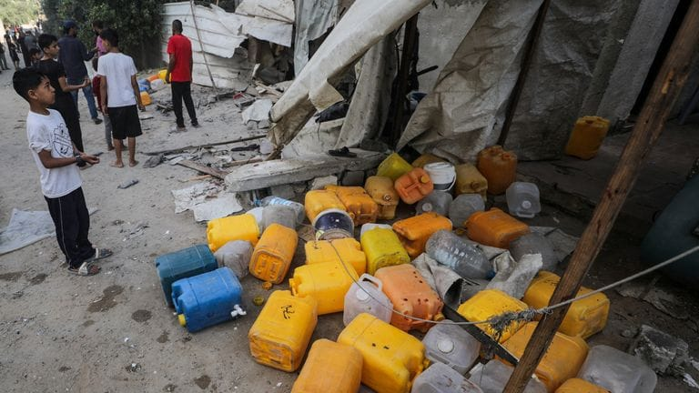

世界苦茶07月14日新闻 | 25条 | 六月中国进出口超预期增长

六月中国进出口超预期增长 | 台湾国民党集结反罢免 | 泰国八成民众希望首相下台 | 美国促盟友对台湾问题表态
今日三条新闻分析
苦茶数据
美元兑人民币：7.17（昨日7.17，前日7.17）
美元兑日元：147.40（昨日147.33，前日147.10）
上证指数：3525（昨日3510，前日3546）
标普500指数：休市（昨日6259，前日6280）
比特币：121286（昨日117848，前日117671）
布伦特原油：70.56（昨日70.69，前日68.79）
中国新闻
• 美促盟友表态台海角色 ：美国据报敦促地区盟友，说明美国和中国大陆如果因台湾问题开战，他们将扮演何种角色。澳大利亚国防工业部长康罗伊回应说，澳洲不会提前承诺在任何冲突中出兵。康罗伊星期天接受澳洲广播公司采访时说，澳洲将主权放在首位，“我们不讨论假设”。英国《金融时报》星期六报道，美国五角大楼要求日本和澳洲表明在台海战争角色。知情人士说，美国国防部负责政策的副部长科尔比在最近与日本和澳洲国防官员的会谈中，一直推动这项议题。
• 大连女生涉不当行为或被开除 ：中国大连工业大学一名非单身的女学生，疑因与同样非单身的乌克兰电竞选手发生关系后，造成负面影响，拟被学校开除其学籍。大连工业大学学生工作部网站星期二发布“关于拟给予李欣莳同学开除学籍处分的公告”。公告称，鉴于李欣莳去年12月16日的不当行为，造成了恶劣的负面影响。根据《普通高等学校学生管理规定》第30条第六款及《大连工业大学学生违纪处分规定》第19条第六款，拟给予开除学籍处分。大连工业大学在公告中称，学校于今年4月15日至24日已通过直接送达、邮寄送达、留置送达等方式，向李欣莳送达《大连工业大学学生违纪拟处分告知书》。“为充分维护各方权利，现开展公告送达。” （翻評：管得真多。）
• 中朝将恢复列车服务 ：日本放送协会报道，朝鲜和中国已同意恢复两国首都之间的旅客列车服务。受冠病疫情影响，该列车运营在2020年1月暂停。多名熟悉中朝关系的消息人士向日本放送协会说，中朝铁路部门已同意在近期重启平壤至北京之间的铁路服务。消息人士称，目前进行最后调整，预计最早将于8月恢复运行。
• 大同大学10教师或被解聘 ：中国山西大同大学10名教师被指长期旷工，校方拟与他们解除聘用关系。大同大学星期四在官网通报，10人未履行任何审批程序长期脱岗旷工。根据《事业单位人事管理条例》等相关规定，学校研究决定，拟依法与10名长期旷工人员解除聘用关系并注销其事业编制。校方也说，因未与本人取得有效联系或本人收到通知后未到校办理解聘手续，现通过公告方式予以送达，并呼吁他们自公告发出之日起30日内到本单位办理相关手续或进行陈述、申辩，逾期视为放弃权利，学校将按照相关规定正式解除聘用关系并注销其事业编制。
• 中国高温再扩展至多省 ：中国高温范围继续扩展，山东、河南两省的局部地区温度预计将超过40℃。据中国中央气象台网站，气象监测显示，星期六，内蒙古西部、京津冀、河南北部、山东中北部、重庆北部等地出现高温天气，部分地区最高气温在37℃以上，内蒙古拐子湖达到39.8℃。星期天的高温范围进一步向南扩展，预计内蒙古西部、京津冀、河南、山东、安徽北部、江苏北部、湖北、重庆、四川东部等地将出现高温天气。
• 中日东海空中交锋升级 ：中国军机被指在东海异常接近日本自卫队飞机后，中国国防部反指自卫队侦察机多次进入中国东海防空识别区进行抵近侦察，中国军机对侦察机查证识别、跟踪监视。中国国防部星期天在微信公众号说：”日本航空自卫队侦察机多次进入中国东海防空识别区进行抵近侦察，中国军机依法对其查证识别、跟踪监视，相关处置行动完全正当合理、专业规范。“中国国防部新闻发言人蒋斌指日本舰机对中方抵近侦察滋扰，是造成中日海空安全风险的根源，并说：“我们希望日方与中方相向而行，为两国关系稳定发展创造氛围。”
亚太印太新闻
• 泰南陆桥计划陷不确定 ：泰国政治前景阴云密布，政府雄心勃勃的超大型基础设施项目泰南陆桥计划也面临不确定性。分析认为，任何对为泰党领导的联合政府的影响，都将阻碍陆桥计划发展。陆桥计划由为泰党的前首相社德他大力推动，旨在打造一条连接泰国湾和安达曼海的直通物流走廊。社德他遭罢免后，继任者佩通坦表明新政府会继续推进计划。尽管计划获得政府高层支持并完成初步研究，但质疑声仍不断高涨，从航运业资深人士到基层领袖和政策分析师均持怀疑态度。
• 泰民调八成要首相下台 ：泰国最新民调显示，超过八成民众希望首相佩通坦辞职或解散国会。综合《曼谷邮报》和《民族报》报道，泰国国立发展管理学院星期天发布的民调结果显示，约42%受访者希望佩通坦辞职，以便选出新任首相；另外四成受访者希望她解散国会，为大选铺路。此外，15%受访者希望佩通坦能继续执政，仅1%的人希望发生军事政变。
• 巴基斯坦洪灾致百人死 ：巴基斯坦国家灾难管理局说，自6月26日至7月12日，强降雨和洪灾已在全国造成至少104人死亡，200多人受伤。新华社报道，巴基斯坦国家灾难管理局星期天说，在过去24小时，因降雨引发的事故已造成六人死亡、15人受伤。各地数据显示，东部的旁遮普省死亡人数最多，达到39人；其次是西北部的开伯尔-普赫图赫瓦省的31人，南部信德省为17人，西南部俾路支省16人。
• 韩国瑜批罢免毁民主 ：国民党籍的台湾立法院长韩国瑜星期天再次批评大罢免是一场“政治谋杀”，一旦成功将摧毁民主，变成民进党一党独裁、一党专制。他呼吁民众一定要出门投票，要像100度开水一样沸腾起来，全面拉票去投不同意罢免。据联合新闻网、中时电子报等报道，7月26日罢免投票将至，韩国瑜星期天到台北内湖替蓝委李彦秀站台，同场还有国民党主席朱立伦、台北市长蒋万安、新北市长侯友宜、台中市长卢秀燕、桃园市长张善政等党内大咖。韩国瑜表示，这次大罢免是台北、新北、桃园、台中等地全部遭提罢免，这绝非民主政治，这是政治谋杀，要把所有优秀蓝军立委“全部杀光光，一个不留”。
• 蓝营大咖集结反罢免 ：台湾在野国民党的立委李彦秀星期天上午在台北举办反罢免造势活动，国民党主席朱立伦、立法院长韩国瑜，以及台中市长卢秀燕、台北市长蒋万安、新北市长侯友宜、桃园市长张善政等四位国民党执政的直辖市长都到场站台。这是7月底大罢免投票前，蓝营大咖首次总动员的造势活动。综合《联合报》和ETtoday新闻云报道，大罢免投票进入倒数两周的关键时刻，李彦秀星期天上午在台北内湖一所中学举办“反恶罢，挺优秀”港湖团结誓师大会。
• 尹锡悦未获户外活动权？ ：韩国前总统尹锡悦的辩护人声称，关押尹锡悦的首尔看守所不给他户外锻炼时间。韩国法务部回应说，这一说法不属实。韩联社报道，尹锡悦因涉嫌策划紧急戒严事件中的内乱、滥用职权以及外患等罪名，于星期四再次被捕。与之前一次逮捕不同，现在尹锡悦已不是韩国总统。因此，他在关押期间并未配备总统安保待遇。
科技新闻
• SpaceX投资xAI达20亿美元 ：据知情投资者透露，马斯克旗下SpaceX已同意向他的另一家公司xAI投资20亿美元，占到了xAI近期股权融资总额的近一半。SpaceX的这笔投资是xAI上月50亿美元股权融资的一部分。这是SpaceX已知的对xAI的首次投资，也是其对另一家公司的最大投资之一。投资者表示，SpaceX还通过债务融资筹集了50亿美元，预计今年晚些时候还将进一步融资。马斯克不断调动其商业帝国资源来支持xAI的发展，后者正在努力追赶OpenAI公司。今年早些时候，他将xAI与X合并，把一个小型研究实验室与一个能帮助Grok聊天机器人扩大影响力的社交媒体平台整合在一起。
• 黄仁勋谈AI出口中国 ：美国科技巨企英伟达首席执行官黄仁勋受访时表示，美国政府不必担心中国军方将使用英伟达的人工智能晶片提升实力。黄仁勋星期天接受美国有线电视新闻网访问，谈及华盛顿对美国科技输华引发的担忧时说，中国军方将避免使用美国科技，以免承担使用时所面对的风险。他说：“我们不必担心这一点，他们不会单依赖这方面，但有可能在某些时候稍微使用。”
• 俄罗斯和白俄罗斯计划创建基于“传统价值观”的人工智能模型： “我们的任务是开发基于我们传统价值观的人工智能，使其值得信赖、可靠，并提供客观信息。”格拉济耶夫表示，白俄罗斯年轻人目前主要使用外国人工智能工具——美国或中国的。“然而，最近对西式人工智能进行深入测试的例子表明，其中一个著名的聊天机器人陷入了种族主义、纳粹主义和对法西斯主义的颂扬，”他声称，这可能指的是埃隆·马斯克的人工智能聊天机器人Grok的案例，该机器人曾多次赞扬阿道夫·希特勒并传播反犹太言论。 （翻評：主權AI肯定是未來的大趨勢。）
财经新闻
• 六月中国进出口超预期增长： 今年上半年，我国货物贸易进出口21.79万亿元，同比增长2.9%，其中，出口13万亿元，增长7.2%；进口8.79万亿元，下降2.7%。按人民币计，6月进出口规模3.85万亿元，增长5.2%，规模是历史上月度进出口的第二高位。其中，出口2.34万亿元，增长7.2%，增长比较快的有，电子元件、船舶等；进口1.51万亿元，增长2.3%，增长比较快的有，自动数据处理设备的零附件、干鲜瓜果等。
• 欧盟联合抗美关税威胁 ：知情人士称，美国特朗普政府对欧盟和其他贸易伙伴发出关税威胁后，欧盟正准备加强与受美国关税打击的其他国家接触。彭博社星期天引述知情人士报道，欧盟将与包括加拿大和日本在内的国家接触，可能与这些国家进行协调。欧盟当天向成员国通报了会谈情况。加拿大面临的关税税率为35%，日本则为25%。特朗普星期六还宣布，将欧盟进口产品的关税税率调高到30%。
• 德国财长吁对美反制 ：德国财政部长克林拜尔说，如果欧盟与美国的关税谈判未能缓和愈演愈烈的全球贸易战，欧盟必须采取果断的反制措施。美国总统特朗普星期六向欧盟和墨西哥领导人发出关税信函，宣布从8月1日起将两地商品的入口关税调高至30%。克林拜尔接受德国媒体访问时说：“ 如果无法通过公平的谈判达成解决方案，那么我们必须采取果断的反制措施，以保护欧洲的就业和企业。我们仍然将伸出手，但不会事事迁就。”
• 马来西亚将要求高端美国AI芯片贸易许可： 马来西亚将对出口和转运美国高性能人工智能芯片实施许可要求，表明政府正寻求打击这些敏感组件转移至中国等地。投资、贸易和工业部周一在声明中表示，若任何个人或公司知晓或有合理理由怀疑相关物品将被滥用，或用于受限活动，则该许可要求其在出口、转运或过境运输货物前至少30天向主管部门报备。该政策立即生效。该部称，此项举措 “旨在填补监管漏洞”，同时马来西亚正依据《战略贸易法》对美国高性能AI芯片是否纳入战略物资清单进行审查。
俄乌战争
• 中俄外长会谈多议题 ：俄罗斯外长拉夫罗夫星期天再次与中国外长王毅会面，讨论乌克兰危机，以及与美国之间的关系。综合俄国卫星通讯社和路透社报道，拉夫罗夫抵达中国，以出席上海合作组织成员国外长理事会会议。俄罗斯外交部公布，双方讨论了与美国的关系，以及依据《联合国宪章》全面完整和相互关联的原则解决乌克兰危机的前景。“会谈中还触及其他‘热点’议题，包括伊朗-以色列冲突和朝鲜半岛局势。俄中两国外交部长重申，在涉及彼此根本利益的问题上，包括维护涵盖所有地区和民族多样性的主权、领土完整和国家统一，双方将坚定地相互支持。”
• 乌克兰称情报官员遭枪杀，兩名暗殺其的特工也身亡： 乌克兰称，周四一名乌克兰高级情报官员遭枪杀后，两名为俄罗斯工作的特工也身亡。乌克兰安全局局长瓦西里·马柳克在一段视频声明中表示，两名为俄罗斯安全局工作的特工在周日上午拒捕后已被追踪并“消灭”。此前，伊万·沃罗尼奇上校在光天化日之下于基辅一个停车场被一名身份不明的袭击者袭击，袭击者随后逃离现场，随后被连射数枪。周日，乌克兰国家警察表示，两名被杀特工是“外国公民”，但未提供更多细节。莫斯科方面尚未立即作出回应。路透社证实，7 月 10 日发生的事件的闭路电视录像显示，当地时间上午 9 点后不久，一名男子离开基辅南部 Holosiivskyi 区的一栋建筑，而另一名男子则向他跑来。
国际新闻
• 以军空袭致加沙伤亡惨重 ：加沙民防机构说，以色列星期天发动的空袭，造成40多名巴勒斯坦人死亡，包括多名儿童。法新社报道，加沙民防发言巴萨勒说，加沙市内连夜遭到多次空袭，导致八人死亡，死者包括妇孺，另有多人受伤。与此同时，以色列与哈马斯展开一周的间接停火谈判也陷入僵局。
• 特朗普九月再访英国 ：美国总统特朗普将于9月对英国进行第二次国事访问。法新社报道，英国白金汉宫星期一宣布，特朗普将于9月17日至19日访问英国。届时英国国王查尔斯三世和王后卡米拉，会在温莎城堡为特朗普与美国第一夫人梅拉尼娅举行欢迎仪式。英国首相斯塔默今年2月底访问美国华盛顿期间，向特朗普递交一封亲笔信，邀请特朗普访英。特朗普说，这是“莫大的荣幸”。
• 马克龙警告欧洲危机 ：法国总统马克龙说，欧洲自由面临的威胁，比第二次世界大战结束以来任何时候都大，法国将在未来两年加速提高国防预算。法新社报道，马克龙星期天，即巴士底日前一天，对法国武装部队发表讲话。他表明，由于俄罗斯入侵乌克兰、美国支持的不确定性，欧洲正处于危险之中。马克龙强调，“我们大陆的和平，从未如此依赖于我们现在做出的决定”，法国面临“保持自由和掌握自己命运”的挑战。
• 梅洛尼警告西方内战 ：美国总统特朗普上调针对欧盟进口产品的关税税率，意大利总理梅洛尼敦促警惕西方内部爆发贸易战。法新社报道，特朗普星期六宣布对从欧盟和墨西哥进口到美国的产品，分别征收30%关税。新的税率高于特朗普此前计划对欧盟和墨西哥产品实施的税率。梅洛尼在意大利总理办公室星期天发布的声明中警告说：“西方内部的贸易战，将在我们共同面对全球挑战之际，削弱我们所有人。”